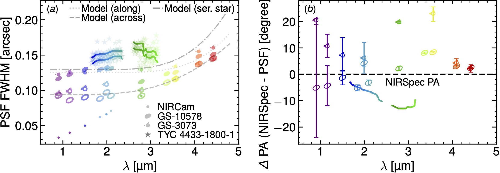

Softwares and data reduction
In this page, we collect some resources that can be useful for the data reduction of NIRSpec IFS data. We also present some softwares developped by members of the GA-NIFS team for the analysis of NIRSpec IFS data.
Improvements to the data reduction of JWST/NIRSpec IFS data
We developped a few improvements with respect to the standard JWST data-reduction pipeline.
The additional steps and corrections in the pipeline code to improve the quality of the data
reduction are described in Section 3 in
Perna et al. (2023)
and Section 1.1 in D'Eugenio et al. (2023a).
Characterization of the Point-Spread Function of JWST/NIRSpec IFS data
In D'Eugenio et al. 2023,
we provide three independent measurements of the shape and size of the NIRSpec/IFS PSF. The first measurement uses observations
of a standard star with the g235h/f170lp grating/filter combination. The second method uses a serendipitous star inside the
NIRSpec/IFS field of view of GS-10578. The third method uses NIRCam imaging from the JADES and JEMS surveys (for which the PSF
is well understood) to infer the NIRSpec/IFS PSF.
For further details, see section 1.2 of the Methods in
D'Eugenio et al. 2023.

Panel (a): NIRSpec PSF as a function of wavelength, using three methods. Method I (stars and solid lines) uses the calibration
star TYC 4433-1800-1. The dots show the FWHM of the NIRCam empirical PSF for comparison. Panel (b): Position angle of the
PSF major axis (points with error bars) compared to the NIRSpec position angle (dashed horizontal line).
The major axis of the PSF is closer to the direction of the slices.
Software for the removal of wiggles in JWST/NIRSpec data (M. Perna)
The spatial undersampling in the NIRSpec IFS may result in apparent wiggles in the single-spaxel
spectra close to the position of bright point sources, such as stars and QSOs. There is currently
no correction in the pipeline for these artefacts; large spatial extraction regions are hence required
to reduce the amplitude of the effect in extracted 1-D spectra
(see Perna et al. 2023;
Law et al. 2023).
There are situations where a point source overlaps with extended emission, thus requiring to disentangle
the flux from both sources, for instance, in studies of QSO hosts and their close environment.
We developped a code that allows to subtract the spurious wiggles at single-spaxel level. The code is written
in python and it is publicly available on github.
Link to github
QubeSpec: A powerful python package for JWST/NIRSpec IFU data analysis (J. Scholtz)
QubeSpec is a simple but powerful python package to fit optical astronomical spectra and more importantly analysing IFS cube
from JWST/NIRSpec, JWST/MIRI, VLT/KMOS and VLT/SINFONI. The code has built models for fitting Halpha, [OIII], Hbeta, [SII] and
[NII] of galaxies, galaxies with outflows, Type-1 AGN and Quasars.
Link to github